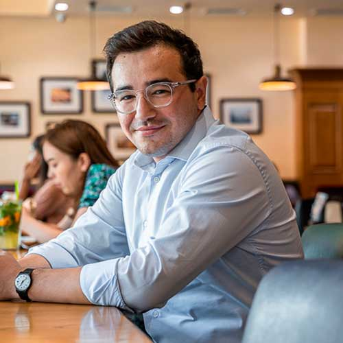

The Evolution of Bon! - A 15-Year Journey
Behzod Ashurov, the leader behind the Bon! coffee chain, shared insights into the remarkable transformation of a small French café into a thriving network of 11 establishments with its own production over the course of 15 years.
The inception of Bon! dates back to 2005 with the establishment of the Italian café, Il Perfetto. This marked the beginning of Bon!'s venture into the restaurant business. Recognizing a gap in the Uzbekistan market for European-style coffee shops, especially those serving authentic coffee, the first Bon! café opened its doors in 2009 on Chekhov Street in Tashkent.
Initially modest in size, all profits from the first café were reinvested, paving the way for gradual expansion. Drawing on his experience in the British business scene, Behzod Ashurov saw significant potential in Uzbekistan, where market expectations and technological advancements were still unfolding.
In the next chapter, we will delve into Bon!'s meticulous approach to choosing locations and their strategy for expansion.
Strategic Expansion and Location Selection
Bon! takes a meticulous approach to selecting locations, considering factors such as foot traffic, local demand, and overall ambiance. With a checklist in place, the company strategically expands, not only within Tashkent but also eyeing opportunities in Fergana, Andijan, Samarkand, and Bukhara.
Previously, the company adhered to an annual expansion model, but with internal systems now optimized, Bon! anticipates a faster pace of growth. Behzod Ashurov emphasizes the importance of understanding each potential location, studying traffic patterns, and actively seeking input from customers and staff in the decision-making process.
Marketing Strategies and Brand Positioning
Bon! places a strong emphasis on word-of-mouth marketing as its primary promotional strategy. Behzod Ashurov believes in providing quality products at reasonable prices, considering "sarafan radio" (word of mouth) as the most effective form of promotion. This commitment led to the establishment of in-house production facilities, including a bakery and confectionery plant, to meet the growing demand across the network.
In response to local market instability, Bon! sought coffee suppliers in Italy, ensuring a stable source of high-quality beans. Today, the company receives coffee shipments two to three times a year. Recent initiatives also involve supporting local producers and contributing to the community by exploring opportunities to train the local youth.
Unique Offerings and Building a Dedicated Team
Bon! stands out by being one of the pioneers in introducing fresh, whole-bean coffee on a large scale in Uzbekistan. The company strategically uses "sarafan radio" to identify potential employees, resulting in a dedicated team of around 300 individuals across their network.
In its early stages, recruitment relied on personal connections, but as the company expanded, a more systematic approach involving recruiters was adopted. Bon! also hired specialists from Uzbekistan with extensive international experience in the hospitality industry, contributing to the development of unique recipes.
Recognizing the shortage of skilled professionals in the market, Bon! is contemplating the establishment of a school to train individuals in the industry. The vibrant and youthful population of Uzbekistan provides an ideal environment for such initiatives.
Adapting to Change and Post-Pandemic Resilience
Bon! faced increasing competition as the market evolved, but this proved beneficial for consumers. The post-pandemic period provided an opportunity for the company to reassess its operations and concentrate on effective problem-solving. Behzod Ashurov notes that the pandemic, while challenging, allowed for a focused approach to documentation, resulting in smoother and more efficient processes.
Uzbekistan, once considered conservative, has witnessed a shift towards openness to change. Consumers now prioritize quality over quantity, a trend positively impacting Bon!'s sales, especially in the takeaway sector. The company is adapting by launching a coffee shop with a dedicated area for takeout orders.
With numerous opportunities for expansion in both Tashkent and regional areas, various organizations, both private and governmental, invite Bon! to explore new locations. Behzod Ashurov expresses his desire for Uzbekistan to foster the best restaurant business, emphasizing the importance of nurturing service, product quality, and, most importantly, the youth.
Future Vision and Commitment to Development
Looking forward, Bon! envisions continued growth in the Uzbekistan market. The state's initiatives opening new opportunities align well with the company's aspirations. Behzod Ashurov expresses a keen interest in evolving services, expanding the product line, and imparting knowledge and skills to the younger generation.
The company's employees remain a top priority, and Bon! aims to prepare skilled professionals not only for internal needs but also to extend the benefits of training programs to external clients if successful. Behzod Ashurov believes in the potential of Uzbekistan's vibrant youth and sees them as a valuable asset for the future.
As Bon! navigates the changing landscape of consumer preferences, economic conditions, and global dynamics, the company remains committed to maintaining its position as a leading player in the Uzbekistan coffee and restaurant industry.